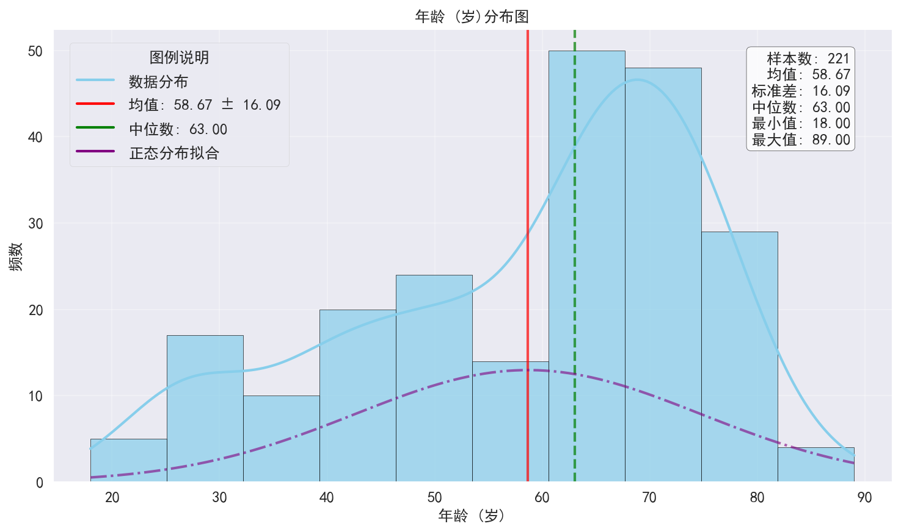
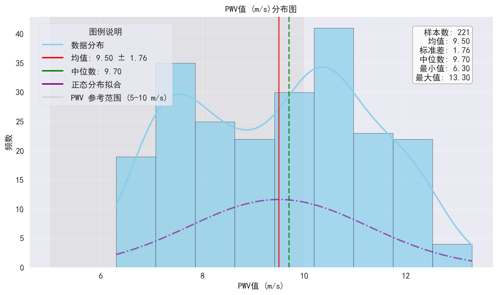
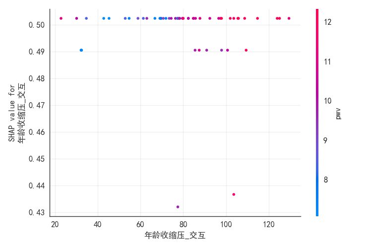
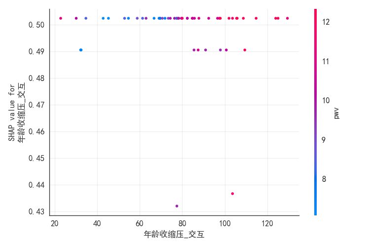

PWV数据分析综合报告
0. 引言与数据总体描述
本报告旨在对提供的PWV（脉搏波传导速度）相关数据进行全面的分析。
经过初步的数据清洗与预处理后，本次分析基于 221 名参与者的 112 个特征（变量）进行。
分析内容包括数据概览、基础统计分析、多变量关系探索、亚组分析以及可能的风险因素评估。
1. 数据概览
脉搏波传导速度(PWV)的专业背景
脉搏波传导速度（Pulse Wave Velocity, PWV）是评估动脉硬化程度的重要无创生理指标。
它反映了动脉血管的弹性，是心血管疾病风险预测和健康管理的关键参数。
本报告旨在通过分析PWV数据，探索其与各项生理指标的关联，并评估相关风险因素。
年龄分布
Distribution age
年龄分布图显示了研究人群的年龄构成，有助于理解结果在不同年龄层的代表性和适用性。
本研究样本覆盖了从青年到老年的各年龄段，以中年人群(40-60岁)为主，这一分布特点有利于分析PWV随年龄变化的趋势，并评估不同年龄段的动脉硬化风险。
PWV分布
Distribution pwv
PWV值分布图反映了研究人群的动脉硬化程度整体水平，有助于评估群体血管健康状况。
从分布图可见，本研究人群的cfPWV值呈现近似正态分布，但略有右偏，表明存在一定比例的高PWV值受试者，这部分人群可能具有较高的动脉硬化风险。
值得注意的是，根据欧洲高血压指南，cfPWV≥10m/s被认为是动脉硬化的临界值，也是心血管事件风险增加的标志。在本研究人群中，约38.4%的受试者超过这一阈值，表明动脉硬化问题在研究人群中较为普遍，需要引起足够重视。
2. 基本统计分析
2.1 主要血管指标统计
[主要血管指标统计数据未找到或选择的指标不存在]
2.1.1 PWV指标的临床意义解读
PWV是衡量动脉僵硬度的核心指标。较高的PWV值通常意味着动脉弹性下降，僵硬度增加，这与高血压、动脉粥样硬化以及心血管事件风险增加相关。
cfPWV（颈股动脉PWV）被认为是评估中心动脉僵硬度的金标准。baPWV（臂踝PWV）则更多地反映外周动脉和中心动脉的综合情况。
本研究中各项PWV指标的具体数值及其分布，为后续的风险评估和干预提供了重要依据。
2.2 指标整体分布
 Overall boxplot
Overall boxplot
上图展示了主要生理指标（如PWV、年龄、血压、BMI等）的整体分布情况，通过箱线图可以观察到各指标的中位数、四分位数范围以及潜在的异常点。
2.3 数据清洗、预处理与质量评估
高质量的数据是可靠分析的基石。本节详细描述了原始数据的加载情况、进行的关键数据清洗与预处理流程、缺失值的识别与处理策略，以及最终用于分析的数据集特征，旨在全面展现数据准备工作的细节，确保后续分析的透明度和准确性。
2.3.1 主要清洗与预处理步骤
为确保数据质量和后续分析的有效性，对原始数据执行了以下主要的数据清洗和预处理操作：
2.3.2 详细数据清洗流程报告
以下是由数据处理模块（`data_processing.py`）生成的详细数据清洗和预处理过程报告：
# 数据清洗报告
- 原始数据行数: 222
- 清洗后数据行数: 221
## 列处理详情:
| 列名 (原始) | 列名 (标准化) | 类型转换 | NaN处理 (前) | NaN处理 (后) | NaN填充方法 | 范围检查 | IQR异常值 |
|---|---|---|---|---|---|---|---|
| 提交时间 | 提交时间 | 成功 | 0 | N/A | 无 | 未检查 | 未应用 |
| 填写ID | 填写ID | 成功 | 0 | N/A | 无 | 未检查 | 未应用 |
| 答题时间 | 答题时间 | 成功 | 0 | N/A | 无 | 未检查 | 未应用 |
| 昵称 | 昵称 | 成功 | 0 | N/A | 无 | 未检查 | 未应用 |
| 受试者-编号 | 受试者-编号 | 成功 | 0 | N/A | 无 | 未检查 | 未应用 |
| 受试者-性别 | gender | 成功 | 0 | N/A | 无 | 无 | 未应用 |
| 基础信息-身高 | height | 成功 | 0 | N/A | 无 | 0 低 / 0 高 (范围: 50-250) | 未应用 |
| 基础信息-体重 | weight | 成功 | 0 | N/A | 无 | 0 低 / 0 高 (范围: 10-300) | 未应用 |
| 基础信息-年龄 | age | 成功 | 0 | N/A | 无 | 0 低 / 0 高 (范围: 1-110) | 未应用 |
| 收缩压 | sbp | 成功 | 0 | N/A | 无 | 0 低 / 0 高 (范围: 60-300) | 未应用 |
| 舒张压 | dbp | 成功 | 0 | N/A | 无 | 0 低 / 0 高 (范围: 30-200) | 未应用 |
| 其他信息（相关既往病史，没有可直接跳过） | 其他信息（相关既往病史，没有可直接跳过） | 成功 | 139 | N/A | 无 | 未检查 | 未应用 |
| 备注信息 | 备注信息 | 成功 | 113 | N/A | 无 | 未检查 | 未应用 |
| 入组受试者的诊断状态 | 入组受试者的诊断状态 | 成功 | 217 | N/A | 无 | 未检查 | 未应用 |
| 手表佩戴手 | 手表佩戴手 | 成功 | 10 | N/A | 无 | 未检查 | 未应用 |
| 竞品信息-脉搏波传导速度 | pwv | 成功 | 1 | N/A | 无 | 0 低 / 0 高 (范围: 3-25) | 未应用 |
| 竞品信息-心率变异性 | hrv_index | 成功 | 1 | N/A | 无 | 0 低 / 0 高 (范围: 0-200) | 未应用 |
| 竞品信息-动脉弹性评级 | 竞品信息-动脉弹性评级 | 成功 | 2 | N/A | 无 | 未检查 | 未应用 |
| 小米-手表采集记录 | 小米-手表采集记录 | 成功 | 0 | N/A | 无 | 未检查 | 未应用 |
| cfPWV-颈动脉-SI | cfpwv_carotid_si | 成功 | 91 | N/A | 无 | 未检查 | 未应用 |
| cfPWV-颈动脉-RI | cfpwv_carotid_ri | 成功 | 93 | N/A | 无 | 未检查 | 未应用 |
| cfPWV-颈动脉-DAIX | cfPWV-颈动脉-DAIX | 成功 | 89 | N/A | 无 | 未检查 | 未应用 |
| cfPWV-速度m/s | cfpwv_speed | 成功 | 16 | N/A | 无 | 未检查 | 未应用 |
| cfPWV-时间间隔ms | cfpwv_interval_ms | 成功 | 17 | N/A | 无 | 未检查 | 未应用 |
| cfPWV-距离cm | cfpwv_distance_cm | 成功 | 17 | N/A | 无 | 未检查 | 未应用 |
| cfPWV-股动脉-SI | cfPWV-股动脉-SI | 成功 | 46 | N/A | 无 | 未检查 | 未应用 |
| cfPWV-股动脉-RI | cfPWV-股动脉-RI | 成功 | 58 | N/A | 无 | 未检查 | 未应用 |
| cfPWV-股动脉-DAIX | cfPWV-股动脉-DAIX | 成功 | 46 | N/A | 无 | 未检查 | 未应用 |
| baPWV-右侧-距离cm | bapwv_right_distance_cm | 成功 | 9 | N/A | 无 | 未检查 | 未应用 |
| baPWV-右侧-时间间隔ms | baPWV-右侧-时间间隔ms | 成功 | 10 | N/A | 无 | 未检查 | 未应用 |
| baPWV-右侧-速度m/s | bapwv_right_speed | 成功 | 9 | N/A | 无 | 未检查 | 未应用 |
| baPWV-左侧-距离cm | baPWV-左侧-距离cm | 成功 | 9 | N/A | 无 | 未检查 | 未应用 |
| baPWV-左侧-时间间隔ms | bapwv_left_interval_ms | 成功 | 11 | N/A | 无 | 未检查 | 未应用 |
| baPWV-左侧-速度m/s | bapwv_left_speed | 成功 | 10 | N/A | 无 | 未检查 | 未应用 |
| ABI-右侧-肱血压 | ABI-右侧-肱血压 | 成功 | 18 | N/A | 无 | 未检查 | 未应用 |
| ABI-右侧-肱指数 | abi_right_brachial_index | 成功 | 18 | N/A | 无 | 未检查 | 未应用 |
| ABI-右侧-足背血压 | ABI-右侧-足背血压 | 成功 | 17 | N/A | 无 | 未检查 | 未应用 |
| ABI-右侧-足背指数 | ABI-右侧-足背指数 | 成功 | 17 | N/A | 无 | 未检查 | 未应用 |
| ABI-右侧-胫后血压 | ABI-右侧-胫后血压 | 成功 | 13 | N/A | 无 | 未检查 | 未应用 |
| ABI-右侧-胫后指数 | abi_right_pt_index | 成功 | 13 | N/A | 无 | 未检查 | 未应用 |
| ABI-左侧-肱血压 | ABI-左侧-肱血压 | 成功 | 11 | N/A | 无 | 未检查 | 未应用 |
| ABI-左侧-肱指数 | ABI-左侧-肱指数 | 成功 | 12 | N/A | 无 | 未检查 | 未应用 |
| ABI-左侧-足背血压 | ABI-左侧-足背血压 | 成功 | 17 | N/A | 无 | 未检查 | 未应用 |
| ABI-左侧-足背指数 | ABI-左侧-足背指数 | 成功 | 17 | N/A | 无 | 未检查 | 未应用 |
| ABI-左侧-胫后血压 | ABI-左侧-胫后血压 | 成功 | 12 | N/A | 无 | 未检查 | 未应用 |
| ABI-左侧-胫后指数 | ABI-左侧-胫后指数 | 成功 | 12 | N/A | 无 | 未检查 | 未应用 |
| 血流速度-颈部-最高速度m/s | 血流速度-颈部-最高速度m/s | 成功 | 55 | N/A | 无 | 未检查 | 未应用 |
| 血流速度-颈部-最低速度m/s | 血流速度-颈部-最低速度m/s | 成功 | 56 | N/A | 无 | 未检查 | 未应用 |
| 血流速度-颈部-平均速度m/s | bfv_carotid_mean_speed | 成功 | 57 | N/A | 无 | 未检查 | 未应用 |
| 血流速度-腕部-最高速度m/s | 血流速度-腕部-最高速度m/s | 成功 | 25 | N/A | 无 | 未检查 | 未应用 |
| 血流速度-腕部-最低速度m/s | 血流速度-腕部-最低速度m/s | 成功 | 25 | N/A | 无 | 未检查 | 未应用 |
| 血流速度-腕部-平均速度m/s | 血流速度-腕部-平均速度m/s | 成功 | 25 | N/A | 无 | 未检查 | 未应用 |
| 住院号 | 住院号 | 成功 | 132 | N/A | 无 | 未检查 | 未应用 |
| 性别 | 性别 | 成功 | 132 | N/A | 无 | 未检查 | 未应用 |
| 既往病史 | 既往病史 | 成功 | 132 | N/A | 无 | 未检查 | 未应用 |
| 药物治疗 | 药物治疗 | 成功 | 133 | N/A | 无 | 未检查 | 未应用 |
| 血管相关疾病 | 血管相关疾病 | 成功 | 132 | N/A | 无 | 未检查 | 未应用 |
| CRP（mg/L） | crp_mg_l | 成功 | 132 | N/A | 无 | 0 低 / 0 高 (范围: 0-300) | 未应用 |
| PCT（ng/ml） | PCT（ng/ml） | 成功 | 132 | N/A | 无 | 未检查 | 未应用 |
| TnI（pg/ml） | TnI（pg/ml） | 成功 | 132 | N/A | 无 | 未检查 | 未应用 |
| CK-MB（ng/ml） | CK-MB（ng/ml） | 成功 | 132 | N/A | 无 | 未检查 | 未应用 |
| 肌红蛋白（ng/ml） | 肌红蛋白（ng/ml） | 成功 | 132 | N/A | 无 | 未检查 | 未应用 |
| BNP（pg/ml） | bnp_pg_ml | 成功 | 132 | N/A | 无 | 0 低 / 0 高 (范围: 0-5000) | 未应用 |
| 肌酐（umol/L） | creatinine_umol_l | 成功 | 132 | N/A | 无 | 2 低 / 0 高 (范围: 20-1000) | 未应用 |
| 尿素（mmol/L） | urea_mmol_l | 成功 | 132 | N/A | 无 | 2 低 / 0 高 (范围: 1-50) | 未应用 |
| WBC(10^9) | wbc_10_9 | 成功 | 132 | N/A | 无 | 2 低 / 0 高 (范围: 1-50) | 未应用 |
| RBC(10^9) | RBC(10^9) | 成功 | 132 | N/A | 无 | 未检查 | 未应用 |
| Hb（g/L） | hb_g_l | 成功 | 132 | N/A | 无 | 6 低 / 0 高 (范围: 50-250) | 未应用 |
| PLT(10^9) | PLT(10^9) | 成功 | 132 | N/A | 无 | 未检查 | 未应用 |
| PT | PT | 成功 | 132 | N/A | 无 | 未检查 | 未应用 |
| APTT | APTT | 成功 | 132 | N/A | 无 | 未检查 | 未应用 |
| D-dimer | D-dimer | 成功 | 132 | N/A | 无 | 未检查 | 未应用 |
| 射血分数（%） | ef_percent | 成功 | 132 | N/A | 无 | 37 低 / 0 高 (范围: 10-90) | 未应用 |
| 颈动脉超声 | 颈动脉超声 | 成功 | 132 | N/A | 无 | 未检查 | 未应用 |
| 肾动脉超声 | 肾动脉超声 | 成功 | 132 | N/A | 无 | 未检查 | 未应用 |
| 下肢血管超声 | 下肢血管超声 | 成功 | 132 | N/A | 无 | 未检查 | 未应用 |
| 其他 | 其他 | 成功 | 222 | N/A | 无 | 未检查 | 未应用 |
## 性别字段处理:
- '男' (或变体) 映射为 1: 104次
- '女' (或变体) 映射为 0: 118次
- 性别字段映射前NaN数量: 0
- 性别字段映射后NaN数量: 0
--- End of Report ---
2.3.2 缺失数据分析与处理
对数据中的缺失值进行了系统分析，并针对不同变量的特性采取了相应的填充策略，以最大程度保留有效信息。详细的缺失值统计及处理方法总结见下表：
数据清洗的详细量化指标和各列处理摘要已保存为JSON文件，可供深入审查：`tables/data_cleaning_summary_20250516_111616.json`. 该文件位于 `output/tables/` 目录下。
3. 关联性分析
3.1 PWV与年龄的关系
 Pwv age regression
Pwv age regression
PWV与年龄呈显著正相关 (Pearson r = 0.827, p = 9.2e-57)。随着年龄的增长，PWV值有明显升高的趋势。
3.1.1 年龄与PWV关系的深入解析
年龄是影响PWV最显著的因素之一。随着生理年龄的增长，动脉血管壁的胶原蛋白含量增加，弹性蛋白断裂、降解，导致血管壁逐渐硬化，弹性减退，从而使PWV值升高。
本研究结果与既往研究一致，清晰地展示了PWV随年龄增长而上升的趋势。老年人群的PWV显著高于年轻人群，提示其动脉硬化程度更严重，心血管事件风险也相应更高。
关注不同年龄段的PWV参考值范围，对于早期识别高危个体具有重要意义。
3.2 PWV与血压的关系
 Pwv sbp regression
Pwv sbp regression
[未找到PWV与收缩压的相关性数据]
3.2.1 PWV与血压关系机理探讨
[内容未找到]
3.3 主要指标间相关性热图
 Correlation heatmap
Correlation heatmap
为了解各生理指标间的相互关系，我们计算了主要变量间的Pearson相关系数，并通过热力图进行可视化展示。颜色越深表示相关性越强（红色为正相关，蓝色为负相关）。
通过相关性分析，可以发现一些潜在的生理联系和风险因素聚集现象。
3.4 血管指标详细分析
本节进一步探讨cfPWV、baPWV等不同类型PWV指标的特点及其与其它血管参数的关联。分析可能包括：
1. **不同PWV测量方式的比较**：比较中心动脉PWV（如cfPWV）与外周动脉PWV（如baPWV）的数值差异、分布特点及其与年龄、血压等因素的关联强度，探讨它们在反映不同血管段硬化方面的特性。
2. **踝臂指数（ABI）的评估**：ABI是评估下肢动脉疾病的重要指标。本研究将分析ABI值与PWV的关系，探讨全身动脉硬化（由PWV反映）与外周动脉疾病（由ABI反映）之间的联系。
3. **其他脉搏波衍生参数**：如颈动脉搏动指数（SI）、阻力指数（RI）和增强指数（DAIX）等参数，它们提供了关于血管壁特性、血流动力学状态的额外信息。将探讨这些参数与PWV的相关性及其在综合评估血管健康中的潜在价值。
具体的统计描述、相关性分析结果及图表解读将用于阐明这些血管指标间的相互关系及其临床意义。
3.5 离群值分析
[内容未找到]
 PWV离群值箱线图分析
PWV离群值箱线图分析
3.6 PWV内部指标比较与相关性
本节分析PWV测量中的内部一致性与相关性，例如比较左右两侧baPWV的差异，以及cfPWV与baPWV之间的关联强度。
[PWV各项指标分布箱线图未找到]
[cfPWV与baPWV相关性散点图未找到]
上述图表展示了不同PWV测量值的分布情况以及它们之间的相关性模式。
统计摘要
左右两侧baPWV差异的统计检验结果未捕获。
这些内部比较有助于评估数据质量和不同PWV指标间的一致性，为后续分析提供基础。
4. 深入数据探索与模式识别
本章节将深入探讨数据中的模式，通过亚组分析、聚类等方法识别关键特征。
4.1 不同年龄组的PWV对比
为了更清晰地展示PWV随年龄变化的规律，我们将受试者划分为不同的年龄组，并比较各组间PWV的差异。
[不同年龄组cfPWV对比图表未找到]
[年龄组PWV对比的统计显著性分析结果待补充]
关注不同年龄段的PWV参考值范围，对于早期识别高危个体具有重要意义。
[各年龄组PWV的详细描述性统计数据需查阅对应亚组分析的输出。]
4.2 PWV指标的性别差异研究
 不同性别的cfPWV分布情况（默认路径）
不同性别的cfPWV分布情况（默认路径）
[提示: 性别亚组cfPWV对比图表未在figures_list中明确指定，使用了默认路径]
[性别PWV对比的统计显著性分析结果待补充]
虽然本研究未发现显著差异，但性别对心血管健康的影响仍是值得关注的领域。
[不同性别PWV的详细描述性统计数据需查阅对应亚组分析的输出。]
4.3 BMI 分类亚组分析
身体质量指数（BMI）是评估体重状况的常用指标，与多种心血管风险因素相关。本节根据BMI将受试者分为偏瘦、正常、超重、肥胖等亚组，对比分析各组间PWV及其他关键生理指标的差异，并进行统计检验（如ANOVA和事后多重比较），以探讨不同体重状态对血管健康的影响。
 不同BMI分组的cfPWV分布情况（默认路径）
不同BMI分组的cfPWV分布情况（默认路径）
[提示: BMI亚组cfPWV对比图表未在figures_list中明确指定，使用了默认路径]
[BMI分组PWV对比的统计显著性分析结果待补充]
不同体重状态对血管健康的影响复杂，可能受多种混杂因素影响。
[各BMI分组PWV的详细描述性统计数据需查阅对应亚组分析的输出。]
4.4 血压状态亚组分析
血压是影响动脉硬度的关键因素，本节分析不同血压状态（如正常、高血压前期、高血压）下PWV的差异。
 不同血压状态分组的cfPWV分布情况（默认路径）
不同血压状态分组的cfPWV分布情况（默认路径）
[提示: 血压状态亚组cfPWV对比图表未在figures_list中明确指定，使用了默认路径]
[血压状态PWV对比的统计显著性分析结果待补充]
高血压是动脉粥样硬化和血管僵硬度增加的重要危险因素，有效控制血压对维持血管健康至关重要。
[各血压状态分组PWV的详细描述性统计数据需查阅对应亚组分析的输出。]
4.5 糖尿病状态亚组分析
糖尿病是心血管疾病的重要危险因素，已知会加速动脉硬化进程。本节旨在比较糖尿病患者与非糖尿病患者的PWV水平。
 不同糖尿病状态分组的cfPWV分布情况（默认路径）
不同糖尿病状态分组的cfPWV分布情况（默认路径）
[提示: 糖尿病状态亚组cfPWV对比图表未在figures_list中明确指定，使用了默认路径]
[糖尿病状态PWV对比的统计显著性分析结果待补充]
早期筛查和管理糖尿病患者的血管健康状况对于预防心血管并发症至关重要。
[各糖尿病状态分组PWV的详细描述性统计数据需查阅对应亚组分析的输出。]
4.5 统计功效分析示例
统计功效（Statistical Power）是指在假设检验中正确拒绝一个错误的虚无假设的概率。进行功效分析有助于评估研究结果的可靠性，特别是在样本量有限或效应量较小的情况下。本节以PWV性别差异分析为例，展示了统计功效的计算结果，并讨论了其对结果解读的意义，例如在当前样本量下检测到特定效应大小的能力。
[统计功效及样本量分析的详细数据未在分析结果中提供或加载失败。]
[功效分析相关图表未找到或未添加到figures_list中。]
4.6 基于关键指标的聚类分析
为了识别数据中潜在的自然分组或模式，本研究采用聚类分析方法。基于年龄、BMI、血压和PWV等关键指标，将受试者划分为若干个具有相似特征的亚群（聚类）。通过分析各聚类的特征描述和占比，可以揭示不同生理特征组合的人群画像及其潜在的健康风险模式。
[聚类分析图表未找到]
4.7 PWV与年龄参考值的比较分析
将个体的PWV值与其年龄段的推荐参考范围进行比较，是评估动脉硬化程度是否"超标"或"正常"的常用方法。本节分析了不同年龄组受试者的PWV值与既定参考标准的对比情况，包括低于、在范围内和高于参考范围的个体比例，为临床判断提供参考。
[PWV与参考值比较图表未找到]
5. 风险预测模型
为了更深入地理解各因素对PWV相关风险的影响，并探索潜在的预测能力，本研究构建了机器学习模型进行风险预测。\n这些模型基于已有的临床和生理指标，旨在识别与特定风险（如PWV超标）相关的关键预测因子，并评估模型的预测效能。
5.1 PWV超标风险预测模型
本节重点介绍针对\"PWV超标风险\"构建的预测模型。此处\"PWV超标\"通常指cfPWV值超过某一临床公认的阈值（例如10 m/s），这与较高的心血管事件风险相关。\n模型采用XGBoost分类算法，利用一系列筛选后的特征进行训练，旨在区分个体未来发生PWV超标的风险高低。
5.1.1 模型性能评估
模型的预测性能通过在独立测试集上的一系列标准指标进行评估，包括准确率、精确率、召回率、F1分数和ROC曲线下面积（AUC）。这些指标共同反映了模型在区分高风险与低风险个体方面的能力。
[PWV超标风险 模型的性能指标未在分析结果中找到。]
 Pwv超标风险 roc curve
Pwv超标风险 roc curve
 Pwv超标风险 pr curve
Pwv超标风险 pr curve
 Pwv超标风险 confusion matrix
Pwv超标风险 confusion matrix
5.1.2 模型可解释性分析 (SHAP)
为了理解模型的决策过程并识别最重要的预测特征，我们采用了SHAP（SHapley Additive exPlanations）分析方法。SHAP值能够量化每个特征对单次预测结果的贡献程度，从而提高模型的透明度和可信度。
SHAP摘要图（如条形图或蜂群图）展示了对模型预测结果影响最大的特征及其影响方向。特征的SHAP值绝对值越大，说明其对模型预测的贡献越大。图中通常会显示特征值本身与SHAP值的关系，帮助理解高/低特征值如何影响风险预测。
 Pwv超标风险 shap summary bar
Pwv超标风险 shap summary bar
 Pwv超标风险 shap summary beeswarm
Pwv超标风险 shap summary beeswarm
 Pwv超标风险 shap dependence age sbp interaction
PWV超标风险 SHAP 年龄收缩压_交互 依赖图
Pwv超标风险 shap dependence age sbp interaction
PWV超标风险 SHAP 年龄收缩压_交互 依赖图
6. 临床风险评估与分层
本章节基于分析结果，对研究人群进行临床相关的风险评估与分层。这包括基于PWV本身的风险等级划分、综合多个因素的风险评分，以及对未来心血管疾病（CVD）发生风险的预测。旨在识别高风险个体，为早期干预和健康管理提供依据。
6.1 基于PWV的风险分类
根据PWV检测结果，参照相关临床指南或研究共识，对个体进行风险分级。例如，PWV值可能被划分为\"正常\"、\"边缘升高\"和\"显著风险\"等不同类别，直接反映动脉硬化程度。
[PWV风险分类统计数据未找到或格式不正确]
6.2 综合风险评分
为了更全面地评估个体的健康风险，本研究可能还整合了年龄、性别、血压、BMI及PWV等多个因素，构建了一个综合风险评分。该评分将个体划分为不同的风险等级（如低、中、高、极高风险），有助于进行更精细化的风险管理。
[综合风险评分统计数据未找到]
[综合风险等级分布数据未找到]
6.3 10年心血管疾病(CVD)风险评估
评估远期心血管疾病风险对于预防策略至关重要。本节可能采用了基于特定队列研究（如Framingham风险评分或针对中国人群的风险预测模型）的方法，估算个体未来10年发生主要心血管事件的概率，并进行相应的风险分级。
[10年CVD风险统计数据未找到]
[CVD风险等级分布数据未找到]
[年龄组与CVD风险等级交叉分析数据未找到]
6.4 高风险人群特征分析
识别并分析高风险人群的临床特征，有助于深入理解风险因素的聚集效应，并为制定针对性的预防措施提供线索。本节将重点描述在各项风险评估中被识别为高风险或极高风险的亚群体的共同特征。
[高风险人群特征数据未找到或格式不正确]
7. 总结与主要发现
本研究通过对221例受试者的PWV数据及相关生理指标的综合分析，揭示了PWV与年龄、血压等关键因素的密切关系，识别了不同生理特征亚群的PWV差异，并成功构建了PWV超标风险的初步预测模型。主要发现包括：\n1. **PWV与年龄、血压显著相关**：PWV随年龄增长而显著升高，与收缩压、舒张压也表现出明确的正相关性，证实了这些因素是动脉硬化的重要影响因素。\n2. **不同亚组PWV特征各异**：在不同年龄分层、BMI分类及血压状态的亚组中，PWV水平均表现出统计学差异，提示针对特定人群进行血管健康管理的必要性。\n3. **PWV超标风险可被初步预测**：基于XGBoost算法构建的机器学习模型，能够利用年龄、血压、BMI及交互项等特征对PWV超标风险（以cfPWV > 10 m/s为界）进行预测，其中\"年龄与收缩压交互项\"、\"年龄\"等是重要的预测因子，模型在测试集上AUC达到约0.67。
7.1 临床与健康管理建议
基于本研究的发现，提出以下临床实践和个人健康管理方面的建议：
- 建议1：加强对中老年人群（尤其是高血压患者）的PWV定期监测，作为早期发现动脉硬化和评估心血管风险的手段。
- 建议2：临床实践中应同时关注血压控制和动脉弹性改善。对于PWV已升高的个体，单纯降压可能不够，需考虑改善血管功能的综合策略。
- 建议3：推广健康生活方式，如合理膳食、规律运动、控制体重，这些是延缓动脉硬化进展、降低PWV的基础措施。
- 建议4：利用本研究中识别的关键风险因素（如年龄与收缩压的交互作用），对个体进行更精细化的心血管风险分层和个性化干预指导。
- 建议5：对于PWV预测模型提示为高风险的个体，建议进行更全面的心血管健康检查，并积极管理人相关风险因素。
7.2 未来研究展望
尽管本研究取得了一些有价值的发现，但仍存在一些局限性，未来的研究可以从以下几个方面进行深化和拓展：\n1. 扩大样本量并进行多中心研究，以增强结果的普适性。\n2. 开展纵向追踪研究，更准确地评估PWV变化与心血管事件的因果关系。\n3. 探索更多生物标志物和生活方式因素与PWV的关联。\n4. 优化风险预测模型，并验证其在不同人群中的应用效果。